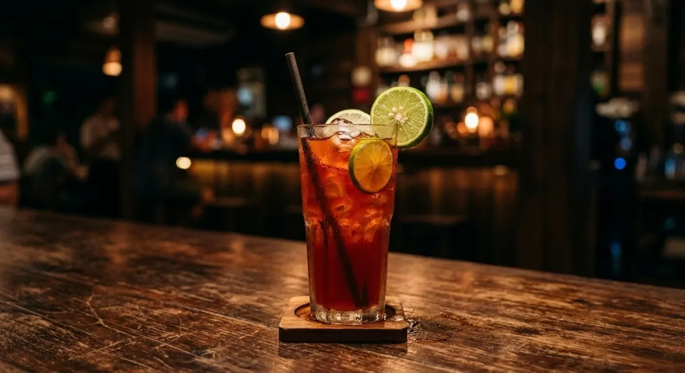

Pulled Thai red tea over ice, sharpened with fresh lime and finished with the pinch of salt nobody expects.

ชามะนาว is Thai tea's sour twin: same pulled red tea as cha yen, but instead of condensed milk it gets lime juice, and the drink turns from a dessert into a cooler. Kapook's selling-version recipe frames it as exactly that — the drink you order when the sweet iced tea is too much and the weather is not.
The technique is the Thai tea sock, always. The powder goes in the sock, boiling water goes over, and the tea gets pulled — poured back and forth between two vessels — until the colour goes deep. Kapook's recipe then rests it 2–3 minutes before the sugar and salt go in. The salt is the detail every source keeps: a pinch against the tannins, so the tea reads bright instead of bitter. Wongnai's café version does the same pull in an espresso handle — 20 seconds of steep, 100 ml of concentrate — which tells you how this drink migrated from the street stall into the coffee shop.
And there's a second school hiding in the name. Cookpad's Priya makes ชาเขียวมะนาว — the green-tea version, Cha Tra Mue's jasmine-green leaf pulled six rounds, same lime, same salt. The structure never changes: strong pulled tea, sugar, lime, ice.
| Thai | English | Amount |
|---|---|---|
| ผงชาไทย / ผงชาแดง | Thai red tea powder | 3 tbsp |
| น้ำร้อนจัด | Boiling water | 120 ml |
| น้ำตาลทราย | Sugar | 2 tbsp |
| เกลือ | Salt | a pinch |
| น้ำมะนาว | Fresh lime juice | 1–1½ limes |
| น้ำแข็ง | Ice | 16 oz glass, filled |
Wongnai's café version (22 oz): 3 tbsp tea, 100 ml extraction, 3 tbsp sugar or honey, 25 ml lime, water to 200 ml. The green school (Cookpad): 1½ tbsp green tea, 170 ml hot water pulled 5–6 rounds, 3 tbsp sugar or 45 ml syrup, 30 ml lime, pinch of salt.
Red or green tea. The classic is red Thai tea (Kapook, Wongnai); the green-tea version (Cookpad) is a parallel drink under the same name. Same structure — different leaf, jasmine-clean instead of smoky-sweet.
Sweetness level. Kapook's selling recipe runs 2 tbsp — sharp and lime-forward. Wongnai and Cookpad run 3 tbsp or syrup, which lands closer to a proper sweet tea. Honey is Wongnai's listed alternative.
The steep. Kapook pulls then rests 2–3 minutes; Wongnai's espresso version steeps exactly 20 seconds for 100 ml of concentrate; Cookpad counts six pulls. Long rests deepen the colour but push bitterness — the lemon8 tea-shop tip is to pull fast and never let the tea sit long, so it doesn't go ฝาด (astringent-stale).
Fresh lime or powder. Fresh limes in every home recipe; Kapook's business note swaps in lime powder to control cost at scale. The powder version is the street-stall economy, not the recipe's ideal.
Watering down. Only Wongnai tops up with water (to 200 ml) — the café move that stretches the concentrate into a long drink. The stall recipes pour the tea straight.
This recipe is translated from the following Thai-language sources. Where they disagree, we've said so.
1. Kapook — "วิธีทำชามะนาว สูตรมะนาวสด หวานเปรี้ยวทำขายสร้างอาชีพ" (the recipe used here) — cooking.kapook.com
2. Wongnai — "สูตร ชามะนาว" by ลองทำ (the café/espresso version) — wongnai.com
3. Cookpad — "ชาเขียวมะนาว" by Priya (the green-tea school) — cookpad.com
4. Lemon8 — "สูตรชามะนาว (สไตล์ชาไทย/ชาตรามือ)" (per-glass ratio, anti-astringency trick) — lemon8-app.com